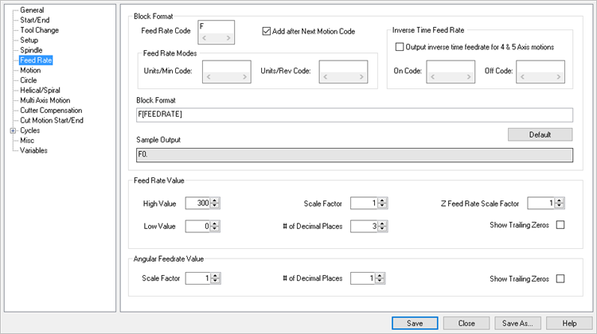

This tab sets the feeds and speeds parameters
 PPG Editor: Feed Rate |
Characters for the feed rate block: •Feed Rate Code: Register used for the feed rate value •Add after Next Motion Code: •Feed Rate Modes Units/Min Code: Typically a G94 Unites/Rev Code: Typically a G95 •Inverse Time Feed Rate When Output inverse time feedrate for 4 & 5 Axis motions is selected the On Code is output at the start of the operation and Off Code at the end. You turn on the Inverse Time Feedrate using a checkbox in the Post/Feedrate tab. You can set up the code for On and Off in the same tab. Once this is set, then all 4 and 5 axis motions will be processed with this feedrate being output. The way the feedrate is computed is as follows: First the distance traveled by the tool is computed for each move = dist Then the time taken for traversing the move is computed thus: timeForTravel = dist / cutFeedRate; Then the inverse time feedrate is = 1.0/timeForTravel; And it is output for each move if different from previous move. On Code: G93 Off Code: G94 •Block Format: Format for the feed rate block •Default: Reset all values in this section to their system defaults. •Sample Output: Sample output displays sample code of the feed rate. It is a non-editable field. |
Parameters for the adjustment of feed rate value: •High Value: Maximum Feed rate value. •Low Value: Minimum Feed rate value. •Scale Factor: Scale factor of Feed rate value. •# of Decimal Places: Number of digits output after the decimal point. •Z Feed Rate Scale Factor: Feed rate scale factor for Z Feed Rate (use [ZFEEDRATE] variable to get the Z feed rate) •Show Trailing Zeros: Show trailing zeros when # of Decimal Places is set to a value greater than zero. |
•Scale Factor: Enter the scale factor for angular feed rate values. •# of Decimal Places: Number of digits output after the decimal point •Show Trailing Zeros: Show trailing zeros when # of Decimal Places is set to a value greater than zero. |
Other PPG Editor Sections: |